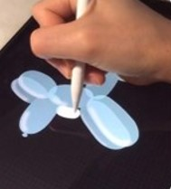

<section data-name="favoritos" class="page">
	<nav class="navbar">
		<div class="navbar-bg"></div>
		<div class="navbar-inner">
			<div class="left">
				<a href="#" class="back link">
					<i class="material-icons">chevron_left</i>
				</a>
			</div>
		  	<div class="title">ArtFol</div>
			<div class="right">
                <a href="#" class="link panel-open" data-panel="left">
                    <i class="material-icons">menu</i>
                </a>
            </div>
		</div>
	</nav>
	<section id="main-hero" class="page-content">
		<h2 class="block-title">Tus favoritos</h2>
		<div class="block">
			<div class="row">
				<article class="col-50">
					
				</article>
				<article class="col-50">
					
				</article>
			</div>
			<div class="row">
				<article class="col-50">
					
				</article>
				<article class="col-50">
					<!-- Nada -->
				</article>
			</div>
		</div>
	</section>
</section>